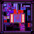

- Teaching . . . December 14, 2021, at 10:49 PM by ?:
- Projects . . . November 11, 2021, at 11:14 PM by ?:
- ECE474Schedule . . . December 16, 2013, at 02:23 PM by ?:
- 20130607 . . . June 10, 2013, at 09:51 AM by ?:
- 20130605 . . . June 07, 2013, at 03:48 PM by ?:
- 20130603 . . . June 07, 2013, at 09:58 AM by ?:
- ECE474HW6 . . . June 04, 2013, at 03:42 PM by ?:
- 20130529 . . . May 30, 2013, at 01:05 PM by ?:
- 20130520 . . . May 28, 2013, at 04:13 PM by ?:
- ECE474HW5 . . . May 28, 2013, at 02:58 PM by ?:
- 20130526 . . . May 24, 2013, at 12:17 PM by ?:
- 20130531 . . . May 24, 2013, at 11:35 AM by ?:
- 20130523 . . . May 21, 2013, at 03:16 PM by ?:
- 20130506 . . . May 21, 2013, at 03:06 PM by ?:
- 20130522 . . . May 21, 2013, at 03:04 PM by ?:
- 20130527 . . . May 21, 2013, at 03:01 PM by ?:
- 20130513 . . . May 16, 2013, at 02:55 PM by ?:
- 20130524 . . . May 16, 2013, at 02:51 PM by ?:
- 20130515 . . . May 15, 2013, at 01:02 PM by ?:
- 20130510 . . . May 10, 2013, at 01:56 PM by ?:
- 20130508 . . . May 08, 2013, at 03:08 PM by ?:
- ECE474HW4 . . . May 05, 2013, at 01:31 PM by ?:
- 20130512 . . . May 04, 2013, at 11:48 AM by ?:
- 20130503 . . . May 03, 2013, at 04:45 PM by ?:
- 20130429 . . . May 03, 2013, at 09:52 AM by ?:
- 20130505 . . . May 01, 2013, at 04:59 PM by ?:
- 20130501 . . . May 01, 2013, at 01:55 PM by ?:
- ECE474HW3 . . . May 01, 2013, at 09:20 AM by ?:
- 20130428 . . . April 28, 2013, at 09:11 PM by ?:
- ECE474HW2 . . . April 27, 2013, at 06:09 PM by ?:
- 20130610 . . . April 26, 2013, at 02:30 PM by ?:
- 20130426 . . . April 26, 2013, at 02:10 PM by ?:
- ECE474UBRDesignSpec . . . April 26, 2013, at 09:35 AM by ?:
- ECE474Resources . . . April 25, 2013, at 11:43 AM by ?:
- 20130424 . . . April 24, 2013, at 01:59 PM by ?:
- 20130422 . . . April 23, 2013, at 09:57 AM by ?:
- 20130419 . . . April 19, 2013, at 01:48 PM by ?:
- 20130408 . . . April 18, 2013, at 11:25 AM by ?:
- ECE474Syllabus . . . April 18, 2013, at 11:24 AM by ?:
- ECE474Hw1 . . . April 18, 2013, at 09:58 AM by ?:
- 20130417 . . . April 17, 2013, at 02:00 PM by ?:
- 20130304 . . . April 17, 2013, at 10:50 AM by ?:
- 20130415 . . . April 15, 2013, at 02:09 PM by ?:
- 20130412 . . . April 12, 2013, at 03:48 PM by ?:
- 20130410 . . . April 10, 2013, at 10:02 AM by ?:
- ECE474InclassStepsPt2 . . . April 09, 2013, at 03:17 PM by ?:
- ECE474 . . . April 03, 2013, at 02:59 PM by ?:
- ECE474InclassStepsPt1 . . . April 02, 2013, at 12:20 PM by ?:
- 20130403 . . . April 02, 2013, at 10:03 AM by ?:
- ECE474Inclass3 . . . March 22, 2013, at 02:08 PM by ?:
- 20130405 . . . March 22, 2013, at 01:09 PM by ?:
- 20130401 . . . March 18, 2013, at 12:36 PM by ?:
- 20130517 . . . March 04, 2013, at 01:42 PM by ?:
- 20130421 . . . March 04, 2013, at 01:08 PM by ?:
- ECE271 . . . May 14, 2012, at 08:57 PM by ?:
- NANDAnalogComparator . . . October 07, 2011, at 01:45 PM by ?:
- FlashADC . . . October 07, 2011, at 12:55 PM by ?:


